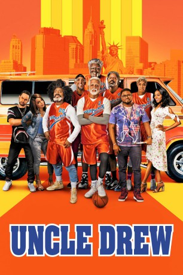

#9735 Uncle Drew
 gesehen am 23.10.2018
gesehen am 23.10.2018
 
 IMDB-Wertung: 5.7 / 10
IMDB-Wertung: 5.7 / 10  Tomatometer: 61
Tomatometer: 61  Metascore: 57
Metascore: 57 
Dax (Lil Rel Howery) vergeigte vor vielen Jahren den entscheidenden Wurf in seiner Basketballkarriere und wirft seither keine Bälle mehr, sondern ist Trainer. Sein größter Konkurrent ist Mookie (Nick Kroll), der Mann, der damals Dax‘ Wurf blockte und ihm seither nur noch Steine in den Weg legt. Doch Dax hat große Pläne: Der Trainer hat seine ganzen Ersparnisse auf den Kopf gehauen, um ein gutes Basketballteam zusammenzustellen. Als Mookie aber dessen Starspieler Casper (Aaron Gordon) stiehlt, steht Dax schnell ohne Team da. Nachdem er durch Zufall die Legende Uncle Drew (NBA-Allstar Kyrie Irving) kennenlernt, sucht er mit dem rüstigen Rentner dessen grandioses altes Team (unter anderem verkörpert von den NBA-Stars Shaquille O’Neal, Reggie Miller und Chris Webber) wieder zusammen. Wird Dax so das Rucker-Classic-Streetball-Turnier in Harlem doch noch gewinnen?
BDRIP DUBBED
Jahr: 2018
Dauer: 103 Minuten
FSK:
Land: USA Studio: LionsgateTonspuren:
Untertitel:
Auflösung: 1080p (1920x1040) Größe: 7639 MB
Genre: Komödie, Sport
Regisseur: Charles Stone III
Drehbuch: Jay Longino
Soundtrack: Christopher Lennertz
Darsteller:
- Kyrie Irving als Uncle Drew
 Lil Rel Howery als Dax
Lil Rel Howery als Dax Shaquille O'Neal als Big Fella
Shaquille O'Neal als Big Fella- Chris Webber als Preacher
- Reggie Miller als Lights
- Nate Robinson als Boots
- Lisa Leslie als Betty Lou
 Erica Ash als Maya
Erica Ash als Maya Tiffany Haddish als Jess
Tiffany Haddish als Jess Nick Kroll als Mookie
Nick Kroll als Mookie Mike Epps als Louis
Mike Epps als Louis J.B. Smoove als Angelo
J.B. Smoove als Angelo- Sal Masekela als Sal Masekela
 Adam Lazarre-White als Frankie The Tournament Director / Narrator
Adam Lazarre-White als Frankie The Tournament Director / Narrator- Lavar Walker als Marty the Manager
- John Calipari als John Calipari
- Earl Monroe als Earl Monroe
- Maurice G. Smith als Dominic 'The Glove' Willis
- Kevin Benton als Zeke 'The Mouth' Murray
- Bill Walton als Bill Walton
- Steve Nash als Steve Nash
- David Robinson als David Robinson
- Dikembe Mutombo als Dikembe Mutombo
- NeNe Leakes als Nene Leakes
- Tinuke Adetunji als Angelo's Girl
- Deadra Moore als Attending Nurse
- Crystal Lee Brown als Baby's Mom
- Kenneth Crudup als Baller
 Mark Robert Ellis als Basketball Coach
Mark Robert Ellis als Basketball Coach Terence Rosemore als Customer
Terence Rosemore als Customer Dwayne Boyd als Customer
Dwayne Boyd als Customer Terrence 'T.C.' Carson als Customer
Terrence 'T.C.' Carson als Customer- Rick Ross als Customer
- Ashton Tyler als Dax - 13 Years Old
- Carrie Walrond Hood als Foot Locker Mother
- Keith Jamal Evans als Other Kid
- Josh Henry als Paramedic
- Rocco Poveromo als Referee
- Barry Rohrssen als Referee
- Phil Ductan als Player (uncredited)
- Elijah Everett als Player (uncredited)
 Jamel Chambers als Angry Fan (uncredited)
Jamel Chambers als Angry Fan (uncredited)- Niles Finklea als Announcer (uncredited)
- Glyne Griffith III als Little Boy (uncredited)
- Saint Hopson als Rowdy Ruckers Fan (uncredited)
- Michael Konanec als Uptown Crush Player (uncredited)
- Aleia Kristene als Ruckers Game Fan (uncredited)
- Gage Lawson als Teen Playing Basketball (uncredited)
- Alexis Ly als Karate Kid (uncredited)
- Andrea Maiuro als Basketball Fan (uncredited)
Datei: X:\2018(N-Z)\Uncle Drew (2018, FSK, 1920x1040).mkv seit 23.10.2018
Festplatte: HD 2018(G-Z)-2019(A-Z)
 Es gibt insgesamt 172 Filme in der Gruppe '2018(N-Z)'
Es gibt insgesamt 172 Filme in der Gruppe '2018(N-Z)'